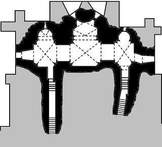

Rares sont les cryptes dans notre région. Bien qu'y subsistent quelques éléments du XIIIe siècle, celle d'Autrêches est pour l'essentiel contemporaine de l'église. Elle s'étend sous le chœur et les chapelles latérales ; on y descend par deux escaliers de seize marches.
Les voûtes d'arête, surbaissées, reposent sur des colonnes courtes engagées. Le style est curieusement roman, mais a reçu une décoration flamboyante. Six soupiraux fortement ébrasés à l'intérieur percent les épais murs, ne laissant passer qu'une faible lumière.
À gauche se trouve une corniche à décor de feuilles de chêne. Au centre, la clé de voûte figure un personnage grotesque dans un décor englanté. On remarque également une niche de crédence et surtout une fresque murale qui laisse deviner un frêle Christ crucifié entre les saintes femmes, avec en arrière-fond la Jérusalem céleste, dans un décor de fleurettes du XVe siècle.
Le fond de la crypte se termine par trois absides de formes différentes. Celle de gauche est à trois pans, celle de droite est arrondie en cul-de-four et celle du milieu, à quatre pans, présente un angle rentrant dans le fond.
Les trois autels
Devant chacune des absides se trouvait un autel (1). À deux de ces trois autels étaient affectées 62 livres de bénéfices provenant du domaine de Noyon. Bien que la cure d'Autrêches ait été donnée vers 1150 à l'abbaye de Longpont par Ancoul, évêque de Soissons, le chapitre cathédral s'était réservé le droit de désigner les bénéficiaires des revenus des trois autels. Le curé d'Autrêches (2) devait y dire douze messes et se contenter de six livres, tandis que deux chapelains recevaient un revenu de 15 livres.
Cela dura jusqu'en 1763, date à laquelle un décret de Mgr de Fitz-James, évêque de Soissons, supprima deux des chapelles. Les bénéfices qui y étaient attachés furent attribués aux bourses du collège Saint-Nicolas de cette ville, étant entendu que l'une de ces bourses devait être donnée par le chapitre cathédral à un étudiant pauvre de la paroisse d'Autrêches. Cette décision priva Claude Lemaire et Nicolas Éloi Charrier de respectivement 31 et 25 livres 5 sous de rente perçus sur l'hôtel de ville de Noyon. Quant au curé d'Autrêches, c'étaient 25 messes basses qu'il avait à servir annuellement à compter de cette date.
L'autel subsistant est celui que nous voyons à droite aujourd'hui. Il est formé d'un piédestal carré sur lequel est posée une table saillante creusée d'une gorge en dessous. Cet autel était à la collation de l'évêque de Soissons et était attaché à la cure.
Un lieu de pèlerinage
Au fond et à droite, on remarque une porte en accolade et un chapiteau très curieux représentant un arbalétrier coiffé d'une sorte de bonnet phrygien, tirant sur un oiseau perché sur un arbre. Aux murs foisonnent de bien curieux graffitis. Au sol, on foule la pierre tombale du dernier des seigneurs d'Autrêches, le comte Charles de Louvel, mort en 1818.
La crypte de l'église d'Autrêches était le siège d'un pèlerinage où l'on venait vénérer les reliques de saint Victor. Celles-ci furent translatées dans une nouvelle châsse en 1776, tandis que l'on mit dans une seconde châsse des reliques du pape saint Pie V, de saint François de Sales et de sainte Jeanne de Chantal.
À la différence du reste de l'église, la crypte n'a pas eu à beaucoup souffrir de la guerre, de sorte que son mobilier fut sauvegardé. C'est ainsi que les châsses contenant les insignes reliques et un rare autel républicain survécurent au conflit. Hélas, ceux-ci ont disparu depuis lors !
(1) Lors des messes célébrées sur ces autels, on invoquait Notre-Dame-des-Croûtes (croûte, creute, crypte, grotte sont des mots de même origine).
(2) Lui-même désigné par le chapitre (à Autrêches, les grosses dîmes étaient partagées à raison des deux tiers pour l'abbaye Notre-Dame de Soissons et d'un tiers pour le curé).